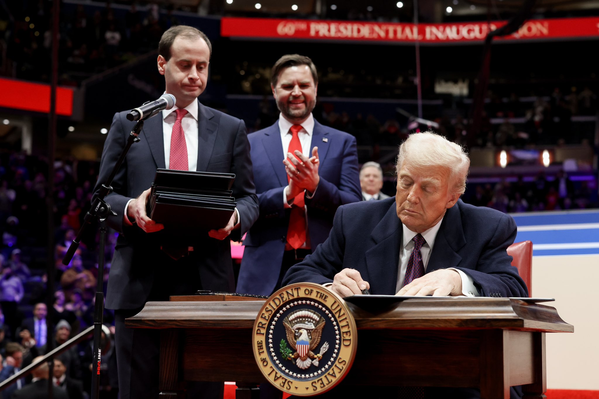
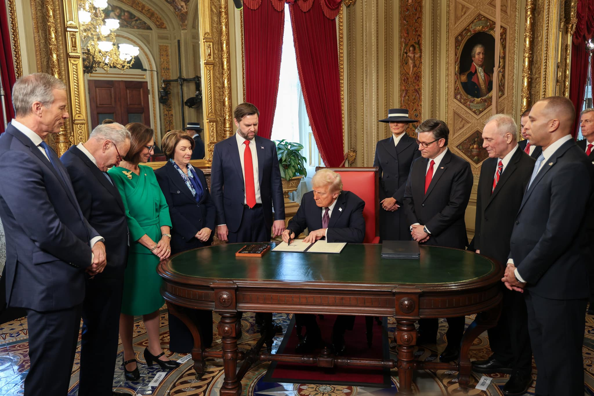
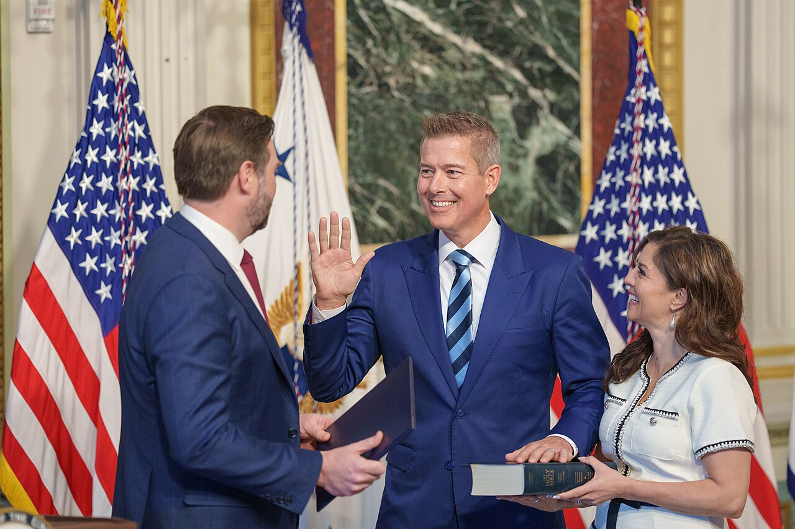
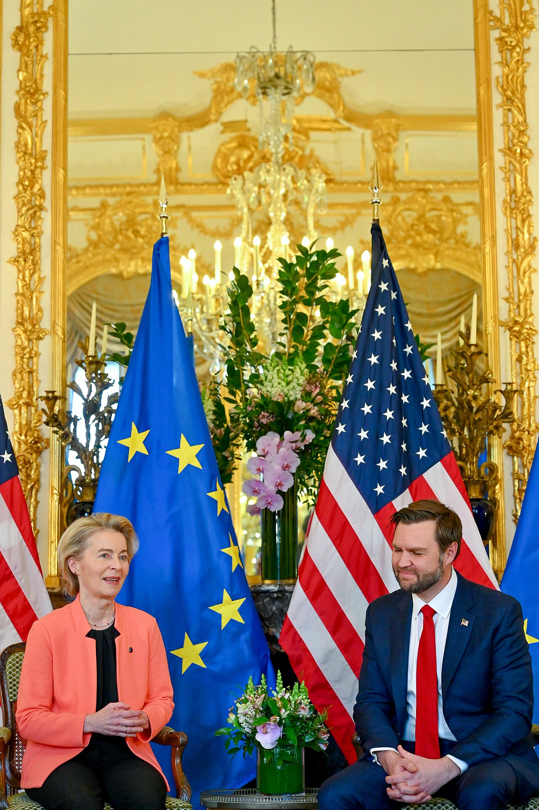
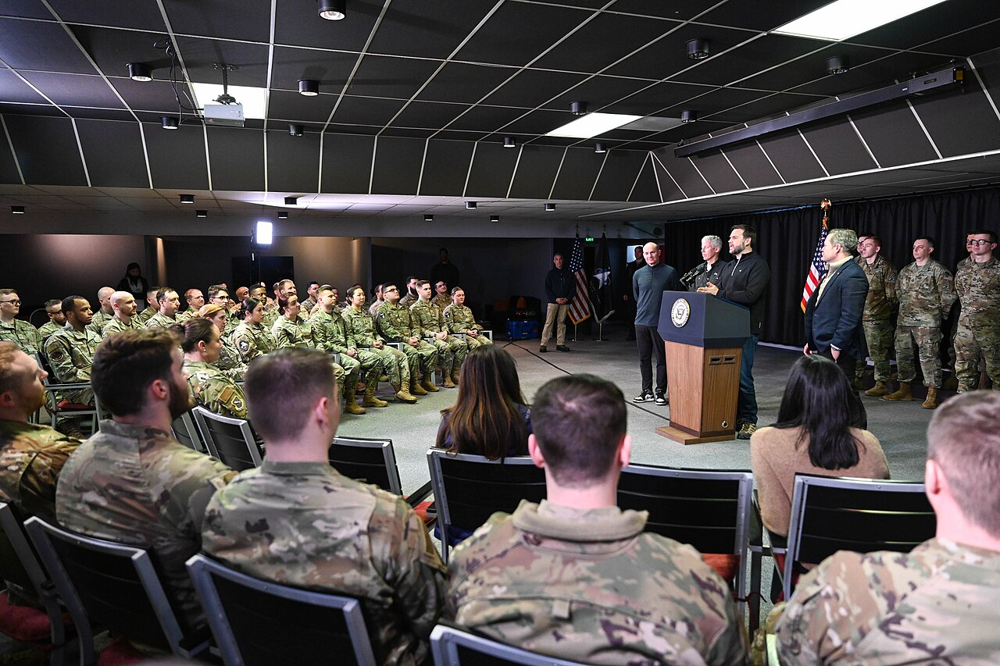
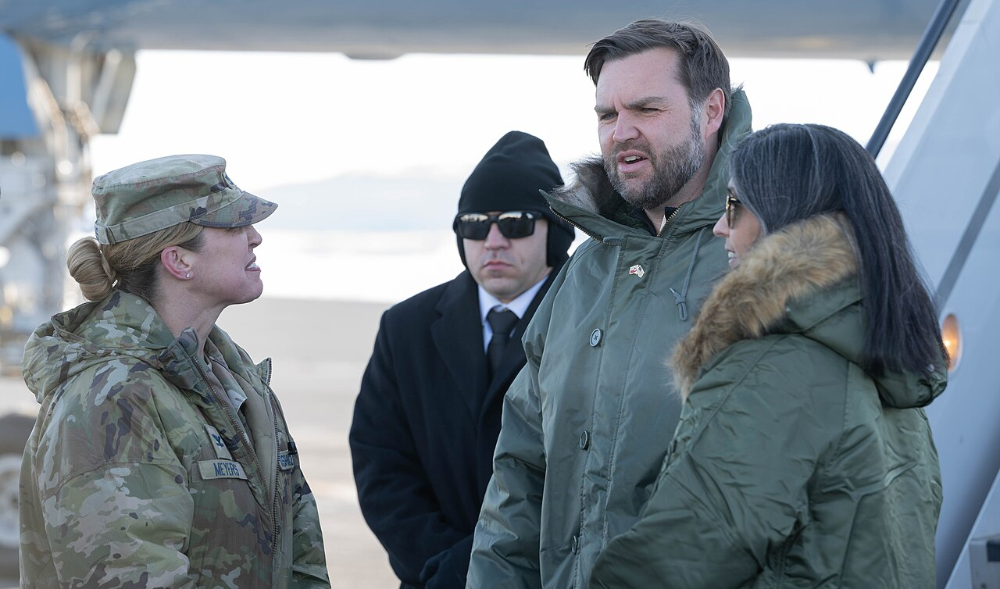
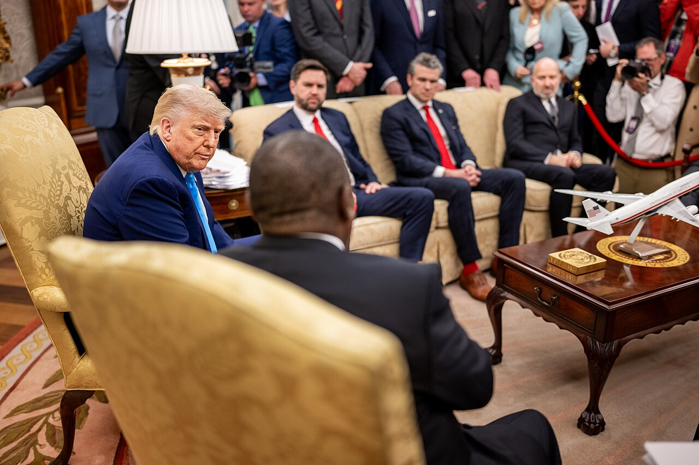

Media gallery
Photos, official videos & memes
A curated gallery of JD Vance from his Senate and Marine Corps service through the vice presidency, paired with official White House YouTube speeches and embeds from his official X accounts.
Last updated November 25, 2026, 8:15 AM PT. Reuse & licensing note: Images on this page are used under their stated licenses — U.S. federal government public-domain works (17 U.S.C. § 105) or Creative Commons–licensed works on Wikimedia Commons with attribution. Videos and social posts are embedded directly from official White House and JD Vance channels, never reposted from copyrighted news outlets. Full credits list
Permitted photographs (15)
Every photograph below is stored in the repository with its author, date, license, and source link. Eleven are public-domain U.S. government works and four carry Creative Commons attribution licenses.

Official vice-presidential portrait
License: Public domain · Source & file page


Swearing-in as the 50th Vice President
License: Public domain · Source & file page
.jpg){kind=link}

Day One executive order signing
License: Public domain · Source & file page


Post-inaugural document signing at the U.S. Capitol
License: Public domain · Source & file page
.jpg){kind=link}

Swearing in Transportation Secretary Sean Duffy
License: Public domain · Source & file page


AI Action Summit meeting with Ursula von der Leyen in Paris
License: CC BY 4.0 · Source & file page


Remarks at the 61st Munich Security Conference
License: CC BY-SA 4.0 · Source & file page
.jpg){kind=link}

Swearing in Army Secretary Dan Driscoll
License: Public domain · Source & file page


All-call with troops at Pituffik Space Base, Greenland
License: Public domain · Source & file page
.jpg){kind=link}

Arrival with Second Lady Usha Vance at Pituffik Space Base
License: Public domain · Source & file page
.jpg){kind=link}

Oval Office bilateral meeting with South African President Ramaphosa
License: Public domain · Source & file page
.jpg){kind=link}

Remarks at the MAHA Summit in Washington, D.C.
License: CC BY 4.0 · Source & file page
.jpg){kind=link}

Speaking at AmericaFest 2025 in Phoenix
License: CC BY-SA 4.0 · Source & file page
.jpg){kind=link}

Official U.S. Senate portrait (118th Congress)
License: Public domain · Source & file page


Marine Corps 248th birthday celebration
License: Public domain · Source & file page

Official White House videos & X clips
Speeches, press briefings, and official trip video embedded from The White House YouTube channel and Vice President Vance’s official X accounts.
Remarks at the 61st Munich Security Conference
February 14, 2025 · Official channel: The White House (@WhiteHouse)
Commencement Address to the U.S. Air Force Academy
May 2026 · Official channel: The White House (@WhiteHouse)
Fraud Task Force Press Conference
October 21, 2026 · Official channel: The White House (@WhiteHouse)
Press Briefing with Karoline Leavitt and the Vice President
January 8, 2026 · Official channel: The White House (@WhiteHouse)
Official memes & lighter moments
Only memes posted directly by JD Vance on his official @JDVance account, embedded via X’s official embed and linked back to each original post.